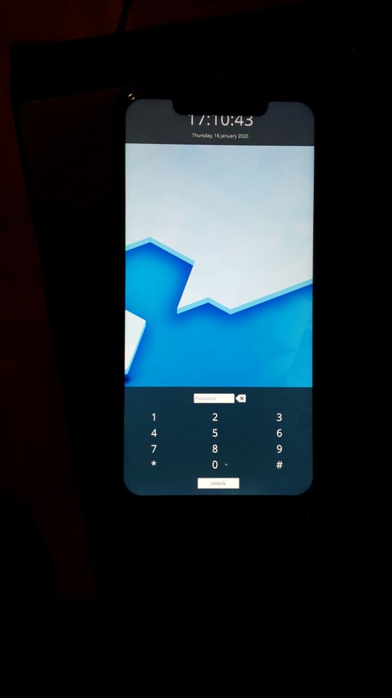

Xiaomi POCO F1 (xiaomi-beryllium)
|  | |
| Manufacturer | Xiaomi |
|---|---|
| Name | Pocophone F1 / POCO F1 |
| Codename | xiaomi-beryllium |
| Released | 2018 |
| Category | community |
| Original software | Android |
| Original version | 8.1 (MIUI 9.6) |
| Extended version | 10 (MIUI 12) |
| Hardware | |
| Chipset | Qualcomm Snapdragon 845 (SDM845) |
| CPU | Octa-core (4x 2.8 GHz Kryo 385 Gold & 4x 1.8 GHz Kryo 385 Silver) |
| GPU | Adreno 630 |
| Display | 1080x2246 LCD |
| Storage | 64/128/256 GB |
| Memory | 6/8 GB |
| Architecture | aarch64 |
| Type | handset |
{kind=link}
| USB Networking |
Works
|
|---|---|
| Flashing |
Works
|
| Touchscreen |
Works
|
| Display |
Works
|
| WiFi |
Works
|
| FDE |
Works
|
| Mainline |
Works
|
| Battery |
Partial
|
| 3D Acceleration |
Works
|
| Audio |
Works
|
| Bluetooth |
Works
|
| Camera |
Broken
|
| GPS |
Partial
|
| Mobile data |
Works
|
| SMS |
Works
|
| Calls |
Works
|
| USB OTG |
Broken
|
| NFC |
Unavailable
|
| Accelerometer |
Broken
|
|---|---|
| Magnetometer | |
| Ambient Light | |
| Proximity | |
| Hall Effect | |
| Barometer | |
| Power Sensor | |
| Camera Flash | |
|---|---|
| Keyboard | |
| Touchpad | |
| USB-A | |
| HDMI/DP | |
| Ir TX |
Unavailable
|
| Ir RX | |
| Stylus | |
| Haptics | |
| Ethernet | |
| FOSS bootloader | |
Another great phone based on Qualcomm Snapdragon 845 (SDM845).
How to enter flash mode
You have to press Power + Volume Down to enter the bootloader.
Know your panel variant
There are two variants of the Xiaomi Poco F1 with different display panels and touchscreens.
1. EBBG Panel (and Focaltech touchscreen) - dsi_ebbg_fhd_ft8719_video_display
2. Tianma Panel (and Novatek touchscreen) - dsi_tianma_fhd_nt36672a_video_display
To know your panel variant, get into a terminal with root access (you can use TWRP recovery's terminal as it has root access or rooted android ROM)
1. Run su to make sure you have root access
2. Run cat /proc/cmdline. Output would be similar to:
rcupdate.rcu_expedited=1 console=tty0 earlycon=msm_geni_serial,0xA84000 androidboot.hardware=qcom androidboot.console=ttyMSM0 video=vfb:640x400,bpp=32,memsize=3072000 msm_rtb.filter=0x237 ehci-hcd.park=3 lpm_levels.sleep_disabled=1 service_locator.enable=1 swiotlb=2048 androidboot.configfs=true loop.max_part=7 androidboot.usbcontroller=a600000.dwc3 root=/dev/dm-0 dm="system none ro,0 1 android-verity /dev/sde48" androidboot.verifiedbootstate=orange androidboot.keymaster=1 androidboot.veritymode=enforcing androidboot.bootdevice=1d84000.ufshc androidboot.serialno=b79782d2 androidboot.baseband=sdm msm_drm.dsi_display0=dsi_tianma_fhd_nt36672a_video_display: androidboot.ramdump=disable androidboot.secureboot=1 androidboot.dp=0x0 androidboot.cpuid=0x205772eb androidboot.hwversion=4.19.0 androidboot.hwc=INDIA androidboot.cert=M1805E10A androidboot.hwlevel=MP
4. Note the value of msm_drm.dsi_display0. In the example above, it's dsi_tianma_fhd_nt36672a_video_display, i.e Tianma panel variant. For EBBG panel variant, it would be dsi_ebbg_fhd_ft8719_video_display
During pmbootstrap init, select the kernel variant by choosing either tianma or ebbg based on the output from above.
Installation
It is possible to either use a pre-built image as explained in the installation article, or to use pmbootstrap to build your own image.
1. Run pmbootstrap init and select xiaomi as vendor and beryllium as device.
2. Select the Kernel variant based on the panel noted from the "Know your panel variant" section above.
3. Follow the onscreen instruction and configure as your needs.
Sample output:
[20:23:35] Location of the 'work' path. Multiple chroots (native, device arch, device rootfs) will be created in there. [20:23:35] Work path [/home/joel/.local/var/pmbootstrap]: [20:23:36] NOTE: pmaports path: /home/joel/.local/var/pmbootstrap/cache_git/pmaports [20:23:36] Choose the postmarketOS release channel. [20:23:36] Available (3): [20:23:36] * edge: Rolling release / Most devices / Occasional breakage: https://postmarketos.org/edge [20:23:36] * stable-next: Latest release / Recommended for best stability [20:23:36] * stable: Old release (unsupported) [20:23:36] Channel [edge]: [20:23:36] Choose your target device vendor (either an existing one, or a new one for porting). [20:23:36] Available vendors (59): acer, alcatel, amazon, arrow, asus, bq, chuwi, cubietech, essential, fairphone, finepower, fly, goclever, google, gp, hisense, htc, huawei, infocus, jolla, klipad, lark, leeco, lenovo, lg, medion, meizu, motorola, nextbit, nobby, nokia, nvidia, oneplus, oppo, ouya, pegatron, pine64, planet, purism, qemu, raspberry, samsung, semc, sharp, sony, surftab, t2m, tablet, teclast, tokio, trekstor, vernee, wexler, wiko, wileyfox, xiaomi, yu, zte, zuk [20:23:36] Vendor [xiaomi]: xiaomi [20:23:38] Available codenames (23): aries, armani, begonia, beryllium, cactus, cancro, clover, daisy, dior, ferrari, ido, kenzo, lavender, libra, mido, santoni, scorpio, tissot, vince, whyred, willow, wt88047, wt88047-downstream [20:23:38] Device codename [beryllium]: beryllium [20:23:42] Which kernel do you want to use with your device? [20:23:42] Available kernels (2): [20:23:42] * ebbg: EBBG Panel. To know the status of the port and which panel your device use, Visit the Poco F1 wiki page: https://wiki.postmarketos.org/wiki/Xiaomi_Poco_F1_(xiaomi-beryllium) [20:23:42] * tianma: Tianma Panel. To know the status of the port and which panel your device use, Visit the Poco F1 wiki page: https://wiki.postmarketos.org/wiki/Xiaomi_Poco_F1_(xiaomi-beryllium) [20:23:42] Kernel [tianma]: tianma [20:23:45] This device has proprietary components, which trade some of your freedom with making more peripherals work. [20:23:45] We would like to offer full functionality without hurting your freedom, but this is currently not possible for your device. [20:23:45] device-xiaomi-beryllium-nonfree-firmware: GPU, venus, modem firmware [20:23:45] Enable this package? (y/n) [y]: [20:23:45] Extra packages [none]: iw,wireless-regdb
Next, we will build the system:
pmbootstrap install # add --fde if you need full disk encryption (FDE)
Flash the kernel and rootfs:
$ pmbootstrap flasher flash_kernel $ pmbootstrap flasher flash_rootfs --partition userdata
Installation to SD card
You can take advantage of Poco F1's SD card slot to install postmarketOS for testing.
Install to the SD card:
$ pmbootstrap install --sdcard=/dev/mmcblk0
To boot from SD, with the device in fastboot mode (with device off, press Power + Volume Down until it enters fastboot mode), type:
$ pmbootstrap flasher boot
Note: This uses pmbootstrap from your computer to boot postmarketOS from the SD card without disturbing your bootloader or your system.
Installation using prebuilt image (fastboot)
Turn off your device, press volume down + power until the device enters bootloader/fastboot mode. Make sure you've installed android-tools or a similar package providing the "fastboot" program on your computer, with the appropriate drivers on Windows.
Download the both the -boot.img.xz and the main system's .img.xz (see above about picking the appropriate variant), then do the following (using the image filename at the time of writing as an example):
$ unxz -v 20230212-1217-postmarketOS-v22.12-plasma-mobile-3.9-xiaomi-beryllium-ebbg-boot.img.xz $ fastboot flash boot 20230212-1217-postmarketOS-v22.12-plasma-mobile-3.9-xiaomi-beryllium-ebbg-boot.img $ unxz -v 20230212-1217-postmarketOS-v22.12-plasma-mobile-3.9-xiaomi-beryllium-ebbg.img.xz $ fastboot flash userdata 20230212-1217-postmarketOS-v22.12-plasma-mobile-3.9-xiaomi-beryllium-ebbg.img
Mainline status
Display
Works fine. MSM DRM based panel.
The Tianma variant is already in mainline Linux.
The EBBG panel variant is available in our kernel fork and works fine, but it is not upstreamed yet.
Brightness can be adjusted. The PMI8998 QCOM WLED driver from mainline is used for brightness adjustment.
Touchscreen
For the Tianma variant, there are patches available for the NT36XXX touchscreen over here: https://lwn.net/ml/linux-kernel/20201028221302.66583-1-kholk11@gmail.com/ Its still not accepted. But works fine with some fixes and included in our fork.
For the EBBG variant, Venji10 has written downstream based driver for focaltech touchscreen. Its not upstreamed yet. Included in our fork and works fine.
3D GPU Acceleration
Since our panels are MSM DRM based, 3D acceleration works perfectly fine using the freedreno driver from mainline.
WiFi
2.4Ghz WiFi connection works perfectly fine. However, 5Ghz WiFi network has poor signal reception. Requires fix.
If you have issues connecting to the wifi, double check dmesg. If the following lines are in dmesg:
[ 302.291007] wlan0: authenticate with c0:06:c3:b6:d0:f6 [ 302.291066] wlan0: bad VHT capabilities, disabling VHT [ 302.291070] wlan0: 80 MHz not supported, disabling VHT
Then you must change the wifi width from 80 MHz to 20 MHz in your router's settings. The regulatory region gets selected as CN (China) which causes this issue.You can change the regulatory region by following the instructions here: Change regulatory region
Do not forget to add packages during pmbootstrap init, or you won't be able to change regulatory region after installation:
Sometimes, even if those lines are in dmesg it can still connect to the Wi-Fi (after a few more tries, disabling and enabling Wi-Fi until eventually it succeeds)
[20:23:45] Extra packages [none]: iw,wireless-regdb
Bluetooth
The Bluetooth service crashes on boot and requires a restart in Phosh.
sudo service bluetooth restart
Now you should be able to see the devices show up in Settings->Bluetooth and to pair from the UI.
In case if you want to switch off and on the bluetooth in Phosh, use Settings->Power->Bluetooth toggle and not the Settings->Bluetooth toggle as it doesn't seem to work properly. Requires fix eventually.
Audio
Almost all audio devices work perfectly fine (Speakers, Earpiece, Headphones+Mic, Phone Bottom Mic, Bluetooth headphones+Mic). Except for the Top mic. It doesn't work for some weird reason.
You can change the Audio devices from Settings->Sound.
The userspace ALSA UCM confs are available in our repo: https://gitlab.com/sdm845-mainline/alsa-ucm-conf. Need to be up-streamed eventually.
Headphones+Mic & Phone Internal Mic are already in mainline dts. The TAS2559 driver requires a rewrite and needs to be upstreamed. Included in our fork.
However PipeWire has some issues with Sound. If using PipeWire you'll encounter the following issues:
- Very low volume
- Distortion
- Softlocks (rare but still possible)
Some of these issues have been solved, as explained in the SXMO mailing list (see below) (low volume (partially) and distortion) but other issues remain.
Battery
Caleb and Joel started writing a basic fuel gauge driver with basic functionalities such as charge percentage, temperature, USB plug in and out detection, etc. Included in work. Still requires quite some rework to make it generic enough and extensible. Although charging works, there isn't a proper charging driver yet. It would also be needed to enable USB OTG feature.
GPS
In Phosh, using Gnome Maps app, it is able to fetch the location data from ModemManager using Geoclue service. But I have not extensively tested whether the GPS data is coming from WiFi connection data or Mobile Tower CellID or the GPS itself. As far as I have tested, on a fresh rootfs, with a completely new WiFi AP, it's still able to fetch the location correctly.
GPS (with location data from satellites) works, at least at the lowest levels. This can be tested as follows:
$ qmicli --device-open-mbim --device-open-proxy --device=qrtr://0 --client-no-release-cid --loc-start; sleep 120
[qrtr://0] Successfully started location tracking (session id 0)
[qrtr://0] Client ID not released:
Service: 'loc'
CID: '1'
$ qmicli --device-open-mbim --device-open-proxy --device=qrtr://0 --client-no-release-cid --client-cid=1 --loc-get-position-report
$ qmicli --device-open-mbim --device-open-proxy --device=qrtr://0 --client-no-release-cid --client-cid=1 --loc-get-gnss-sv-info
$ qmicli --device-open-mbim --device-open-proxy --device=qrtr://0 --client-cid=1 --loc-stop
This currently works on GNOME Maps with GeoClue but takes a long time to get a GPS fix because A-GPS support is not implemented yet.
Camera
Able to configure the CAMSS and camera regulators properly and the IMX363 shows up on the I2C bus. A WIP IMX363 driver written initially by Mis012 is being developed over here: https://gitlab.com/sdm845-mainline/linux/-/commits/wip/sdm845-5.13.rc4-camss/. But currently it returns Broken Pipe error when trying to fetch image from the camera using v4l2-ctl.
The Camera register configurations can be observed by enabling CAMSS debug in downstream android kernel and noting the logs for lines similar to
CAM-CCI: cam_cci_data_queue: 741: cmd_size 24 addr 0x136 data 0x18
Will probably add more info on this in the SDM845 Mainlining wiki later.
The Poco F1 Camera Configuration I have noted so far:
COMMON CONFIG
CAM_IOVDD_EN | gpio50 | tlmm | vreg_s4a_1p8 | 1.8V
CAM_LDO_EN | gpio99 | tlmm | No idea | 1.35V
Front Cam 1 - Samsung S5K3T1 (20MP)
CAM_F1_RSTN | gpio104 | tlmm | -
FRONT_CAM1_AVDD_EN | gpio29 | tlmm | vreg_bob
FRONT_CAM1_DVDD_EN | gpio9 | pmi8998 | vreg_s3a_1p35
Rear Cam 1 - Sony IMX363 (12MP), I2C Address (0x10)
CAM_R1_RSTN | gpio80 | tlmm | -
REAR_CAM1_AVDD_EN | gpio40 | tlmm | vreg_bob | 2.8V
REAR_CAM1_DVDD_EN | gpio11 | pmi8998 | vreg_s3a_1p35 | 1.35V
Front Cam 2 - OV7251Â ??
CAM_F2_RSTN | gpio25 | tlmm -
FRONT_CAM2_AVDD_EN | gpio91 | tlmm
FRONT_CAM2_DVDD_EN | gpio7 | tlmm
Rear Cam 2 - Samsung S5K5E8 (5MP)
CAM_R2_RSTN | gpio28 | tlmm -
REAR_CAM2_AVDD_EN | gpio79 | tlmm
REAR_CAM2_DVDD_EN | gpio92 | tlmm
Mobile Data, Calls and SMS
Calls and SMS work fine, but as there is no convenient way to enter a SIM PIN, you should remove the PIN from your SIM card when inserted in some Android phone.
Mobile data can be more tricky. If mobile data does not work (an orange exclamation mark over the cellular icon might indicate this), make sure that you obey the following order:
- Disable "Mobile Network" and enable Wi-Fi (unclear: Is Internet access needed?).
- Turn on "Mobile Network" and "Mobile Data", enter your APN when asked and not appearing automatically.
Dual SIM
Although there is no dual SIM support yet, Second SIM slot can be activated as primary sim slot; Which is necessary if we want to use the SD Card.
Get the Application ID (AID) of the SIM:
$ sudo qmicli -d /dev/modem --uim-get-card-status
Switch the SIM slot:
$ sudo qmicli -d /dev/modem --uim-switch-slot=2
Provision the SIM slot:
$ sudo qmicli -d /dev/modem --uim-change-provisioning-session="slot=1,activate=yes,session-type=primary-gw-provisioning,aid=[AID from previous step]"
In case you receive errors in the last step, reboot the phone and try the last step again.
Mobile Data Problems
libqmi has support for QRTR+IPA based modems for quite some time, as seen in the repo: https://gitlab.freedesktop.org/mobile-broadband/libqmi/-/merge_requests?scope=all&search=qrtr&state=merged
ModemManager which uses libqmi to control the modem has added support for QRTR recently: https://gitlab.freedesktop.org/mobile-broadband/ModemManager/-/merge_requests/470
Inspite of all this, some Poco F1 users have mobile data connection issues on some mobile networks. During mobile data connection, it fails with the following errors
[2441]: <info> [024233428.438170] [modem0/bearer1] couldn't start network: QMI protocol error (14): 'CallFailed' [2441]: <info> [024233428.438253] [modem0/bearer1] call end reason (3): generic-no-service
Once reported about it over here: https://gitlab.freedesktop.org/mobile-broadband/libqmi/-/merge_requests/235#note_893224. Still have to properly submit a bug report on this.
You can show an overview what the modem manager sees as follows:
sudo mmcli -m 0 # Warning: output includes personal data sudo mmcli -m 0 | grep -v -e imei -e Numbers -e equipment # excludes some personal data
Change Kernel parameters
1, sudo vim /etc/deviceinfo
2, Change cmdline parameters to desired state
3, sudo apk fix linux-postmarketos-qcom-sdm845
Community Info
Maintainers
- Venji10
- Joel
Users owning this device
- Abishek (Notes: daily driver running phosh)
- Anjanmomi (Notes: daily driver running Sxmo)
- Ash
- Baonks81 (Notes: 6GB/128GB)
- Brittle
- Clamor (Notes: Tianma panel model)
- Dferrg
- Entrider (Notes: Running LineageOS. Daily driver.)
- F (Notes: ~3 years old. Daily driver running SXMO.)
- Hilledkinged (Notes: EBBG display type)
- Illen (Notes: Daily driver, runs LineageOS)
- Iourine (Notes: with LineageOS)
- Joel (Notes: Tianma-Panel)
- Linmob (Notes: Tianma panel)
- Medusa (Notes: Running pmOS;ebbg)
- PiotrZPL (Notes: Running AwakenOS and Ubuntu Touch as a secondary device.)
- Retourmy (Notes: Tianma panel version)
- Retr0 (Notes: Daily driver, running LineageOS 18.1 A11 with Magisk, Kali NetHunter installed)
- Roboe (Notes: (second hand) daily driver; 128GB, Tianma panel; running Lineage OS)
- Schrmh
- SergDS
- Sven (Notes: Running edge with Phosh, EBBG panel and TIANMA panel)
- The Arjdroid (Notes: (Daily Driver) not running postmarketOS on it but in general it has very good custom ROM and custom Kernel and custom Recovery support so wouldn't be surprised if things run very well.)
- The DarkFire (Notes: secondary driver / personal phone, mainline)
- TheBads
- UnDevDeCatOS (Notes: tianma variant, daily driver)
- Venji10
- Wizzdom (Notes: Tianma-Panel, Tinkering with Sxmo)
See also
- pmaports!1156 Initial merge request
- SDM845 Mainline kernel: https://gitlab.com/sdm845-mainline/linux
- Another old WIP mainline kernel by Venji10: https://github.com/Venji10/linux-beryllium
- Attempt at fixing PipeWire issues with this device: https://lists.sr.ht/~mil/sxmo-devel/%3C20220611054214.15958-1-anjan%40momi.ca%3E#%3CPHzD3ucMo4uz1A65MQEBarEy_1IacMaoHBMmow9WeddxN7BSQWXCezGykeH0KCxJJlq4QR24vlFzvDeVF4xKwawhTqp7iFkhdQEu_jIjeyk=@protonmail.com%3E
- Sxmo: Xiaomi Poco F1 (xiaomi-beryllium)